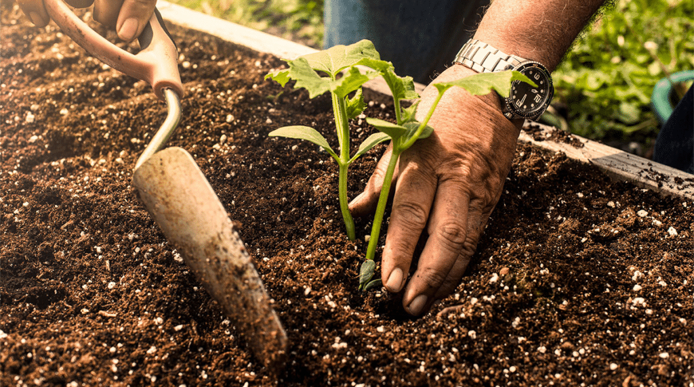
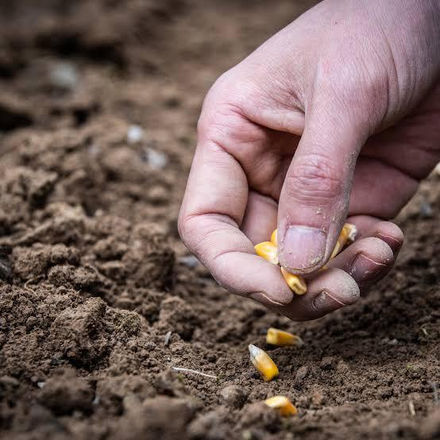
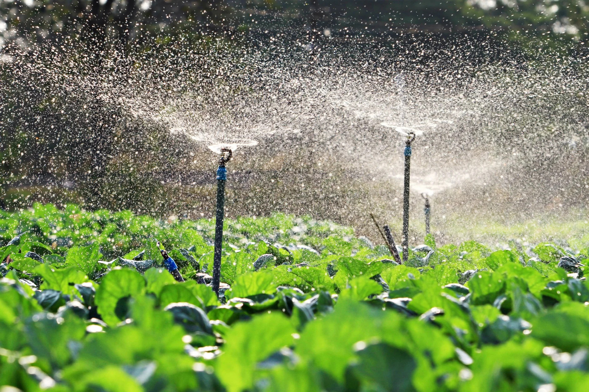

Learn modern farming techniques, soil preparation, irrigation, fertilizer application, and harvesting methods.
Follow these essential farming practices for healthy and productive crops.

Test soil quality, remove weeds, add compost, and plough the field before planting crops.

Choose certified disease-resistant seeds with high germination rates for better crop production.

Apply water regularly using drip irrigation or sprinkler systems to save water and improve yields.
| Season | Recommended Crops | Activities |
|---|---|---|
| Spring | Maize, Vegetables | Land Preparation & Planting |
| Summer | Rice, Corn | Irrigation & Fertilization |
| Autumn | Potatoes, Beans | Harvesting & Storage |
| Winter | Wheat, Mustard | Weeding & Pest Monitoring |